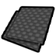

塑料 Plastic兼金属类
塑料级家具建筑262防具106穿戴件18近战工具49远程武器7其它6共448件 价值2 质量0.20 护甲0.68/1.55/0.10 利钝0.60/1
Core_SK · def自带→石化工业(后期) · Things/Item/Resource/Plastic

塑料级·石化工业·ABS树脂 ABS兼金属类
塑料级家具建筑262防具106穿戴件18近战工具49远程武器7其它6共448件 价值4 质量0.25 护甲0.85/1.65/0.09 利钝0.80/1.15
Vile's Materials Science · def自带→石化工业(后期) · Things/Item/Material/ABSBlack
塑料级·石化工业·玻璃纤维 Fiberglass兼金属类
塑料级家具建筑262防具106穿戴件18近战工具49远程武器7其它6共448件 价值8 质量0.28 护甲1.15/1.45/0.16 利钝0.70/0.80
Vile's Materials Science · def自带→石化工业(后期) · Things/Item/Material/Fiberglass

塑料级·石化工业·聚丙烯 PPPlastic兼金属类
塑料级家具建筑262防具106穿戴件18近战工具49远程武器7其它6共448件 价值2 质量0.20 护甲0.74/1.50/0.10 利钝0.60/1
Vile's Materials Science · def自带→石化工业(后期) · Things/Item/Material/HDPEBlue
塑料级·石化工业·聚氯乙烯 PVCPlastic兼金属类
塑料级家具建筑262防具106穿戴件18近战工具49远程武器7其它6共448件 价值2 质量0.20 护甲0.66/1.42/0.14 利钝0.60/1
Vile's Materials Science · def自带→石化工业(后期) · Things/Item/Material/HDPEGreen